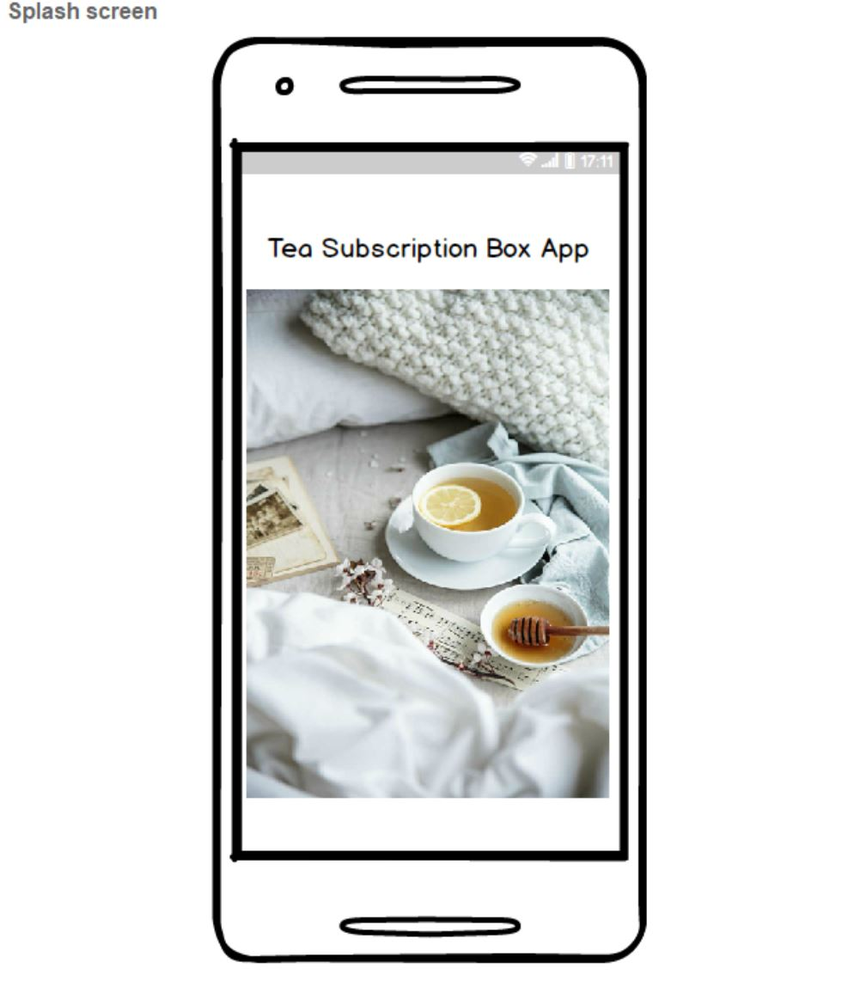
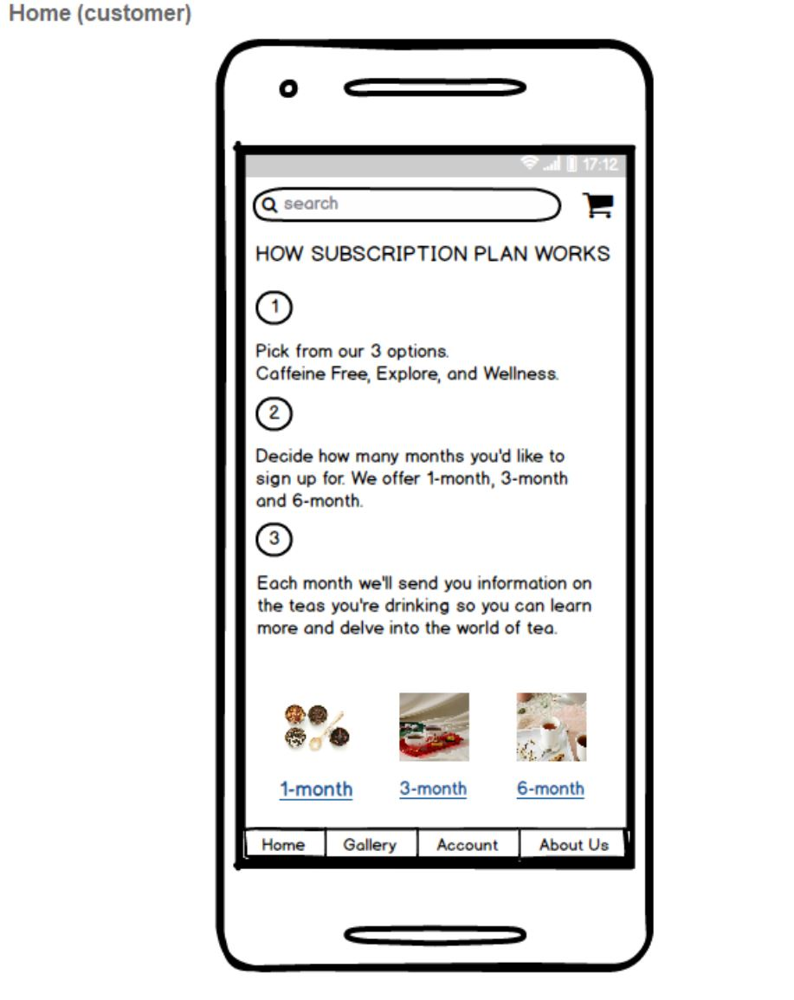
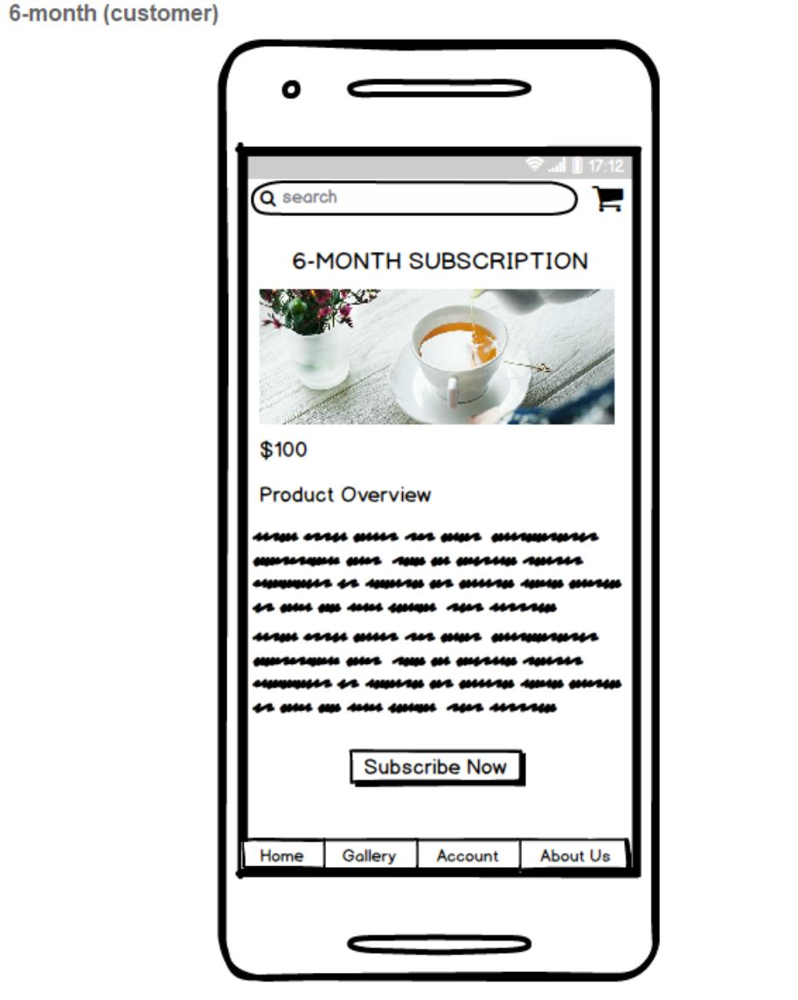
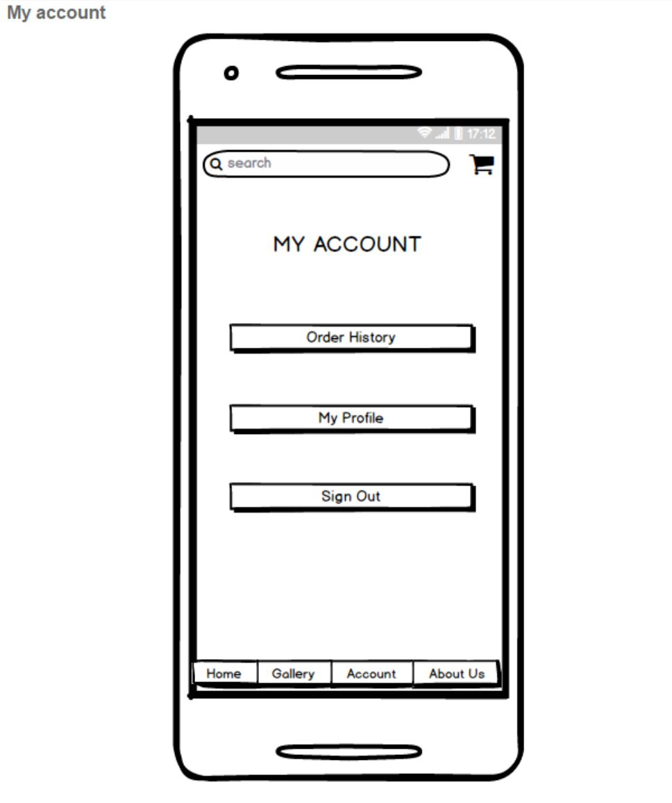
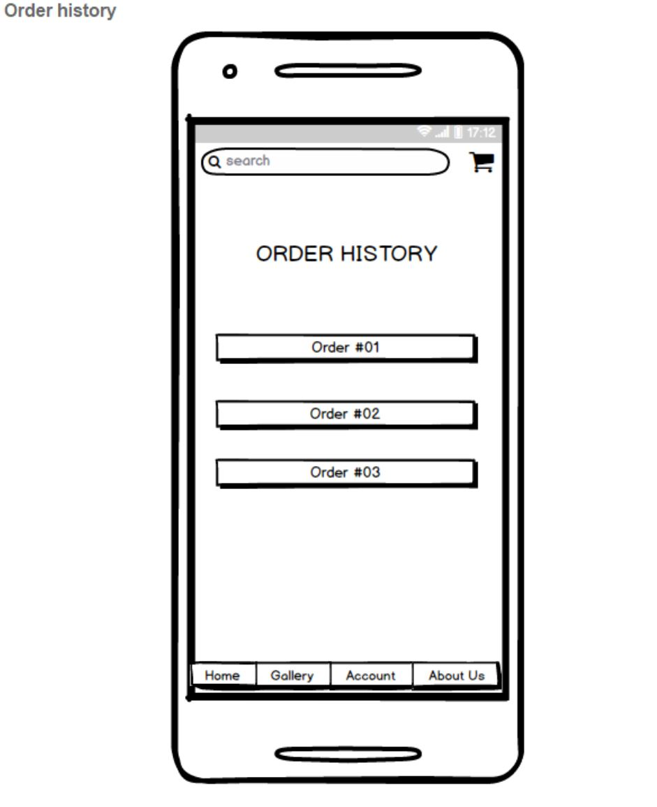

Wireframes
To see all of the screen shots please view the relevant pdfs in the project repository. Click here to view the repository.
The team created wireframes of all the screens that would be necessary to complete the project. These wireframes were a great help when the team was creating the layouts for the apps in android studio. The following are examples of the wireframes.
   